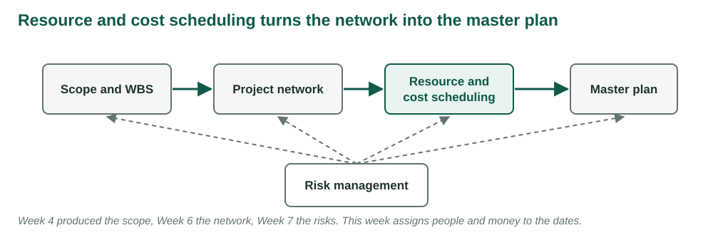
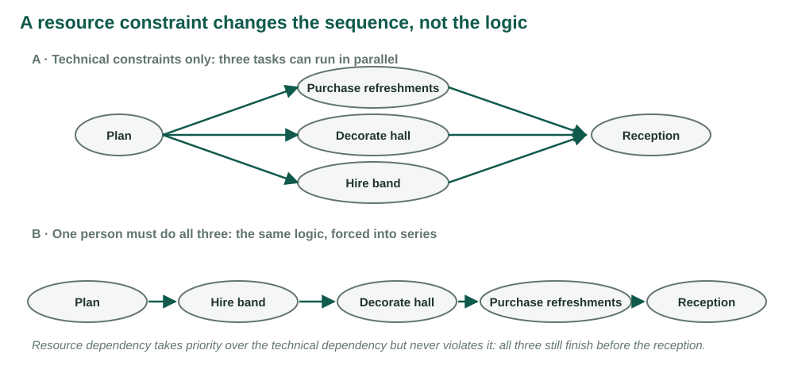
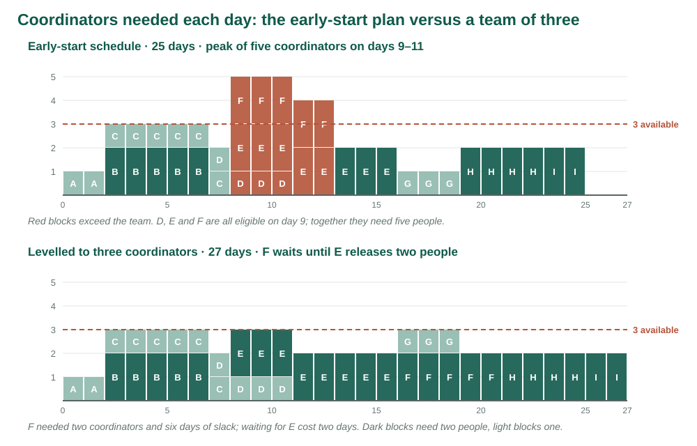
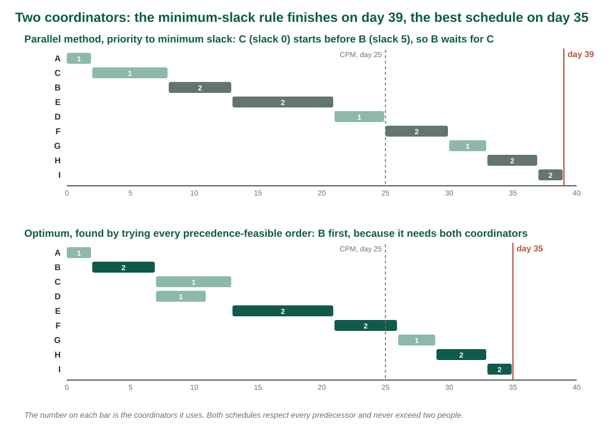
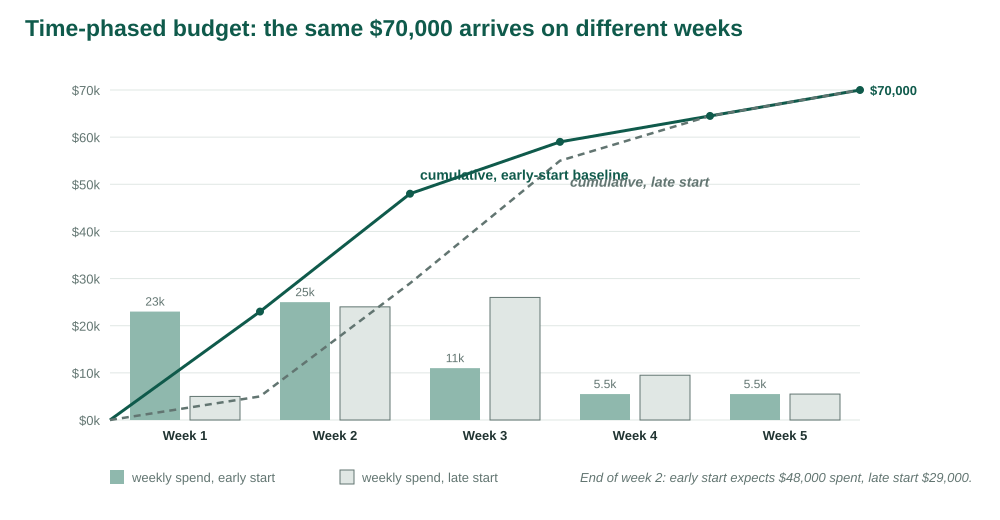

IMSE 456/656 · Larson Ch. 8
2026-10-20
Project network times are not a schedule until resources have been assigned. Cost estimates are not a budget until they have been time-phased.
Clifford F. Gray, quoted in Larson & Gray, Ch. 8 [1]. Figures redrawn from the chapter. The conference’s coordinators, costs and schedules are original to this course.
Weeks 4 to 7 produced a scope, a network, estimates and a risk register.
All of them assumed one thing: whoever an activity needs will be free on the day it starts.
This week asks what happens to the dates when that is false, and then lays the budget out over the dates that survive.
| LO 8-1 | Time-constrained or resource-constrained |
| LO 8-2 | Kinds of resource constraint |
| LO 8-3 | Smooth demand on a time-constrained project |
| LO 8-4 | Level a resource-constrained project |
| LO 8-5 | How the software does it |
| LO 8-6 | When not to split an activity |
| LO 8-7 | Assigning people to tasks |
| LO 8-8 | Multiproject scheduling problems |
| LO 8-9 | Why the budget must be time-phased |
| LO 8-10 | Build the time-phased baseline |

| Term | Meaning |
|---|---|
| Resource | People, equipment or material an activity draws on while it runs |
| Resource loading | How much of a resource every day of the schedule asks for |
| Smoothing | Moving noncritical work inside its slack to flatten the load; the finish holds |
| Levelling | Delaying work until the resource is free; the finish may move |
| Resource link | A predecessor that exists only because the people are busy |
| Time-phased budget | The cost of the schedule laid out week by week |
Demand is uneven. Peaks and valleys in who is needed each day. Remedy: smoothing, delay noncritical work inside its slack, finish date unchanged.
Demand exceeds supply. The peak needs people who do not exist. Remedy: resource-constrained scheduling, delay work until the resource is free, accept a later finish, make it as small as possible.
| Smoothing | Levelling | |
|---|---|---|
| Project is | Time-constrained | Resource-constrained |
| What is fixed | The finish date | The resource limit |
| What moves | Noncritical activities, inside slack | Any activity, as far as needed |
| Goal | Flatter load, fewer peaks | Smallest delay that respects the limit |
| Cost | Slack | Days |

Availability is not known until a first schedule exists.
And without a resource-neutral schedule, nobody can see what the resources are costing.
The network is the baseline the price of a constraint is measured against.
If the critical path slips, will resources be added to get back on schedule?
Yes: time-constrained. The date is fixed; use resources efficiently.
No: resource-constrained. The limit is fixed; minimise the delay.
The Week 4 priority matrix already holds the answer.
The conference plan goes into scheduling software. The coordinators are assigned.
The resource graph turns red: three coordinators needed at 167% for three days.
A colleague’s software release shows one analyst at 140% for all of November.
Both plans passed their critical-path review. What did that review assume?
| Resource | Constrains through | Conference |
|---|---|---|
| People | Skills are not interchangeable; one person, one place | Three coordinators across B to I |
| Materials | Delivery windows and lead times | Five printer days after the program is published |
| Equipment | Type, size, quantity; shared with other projects | Two livestream kits for the whole university |
The question is not how many livestream kits exist.
It is how many are free on the keynote’s day.
A common resource pool, checked across every project, is the only way to know.
| ID | Activity | Pred. | Days | Coord. | Cost |
|---|---|---|---|---|---|
| A | Approve event brief | — | 2 | 1 | $2,000 |
| B | Contract venue | A | 5 | 2 | 30,000 |
| C | Draft program | A | 6 | 1 | 6,000 |
| D | Configure registration | B | 4 | 1 | 8,000 |
| E | Confirm speakers | C | 8 | 2 | 12,000 |
| ID | Activity | Pred. | Days | Coord. | Cost |
|---|---|---|---|---|---|
| F | Recruit exhibitors | C | 5 | 2 | 2,500 |
| G | Publish program | D, E | 3 | 1 | 3,000 |
| H | Prepare on-site materials | F, G | 4 | 2 | 4,000 |
| I | Complete rehearsal | H | 2 | 2 | 2,500 |
| Total | $70,000 |
Week 6 network, Week 7 budget. Costs spread evenly over each activity’s days.
Five minutes with the Week 6 table, and the first picture of the week’s problem.
| Day | 1–2 | 3–7 | 8 | 9–11 | 12–13 | 14–16 | 17–19 | 20–25 |
|---|---|---|---|---|---|---|---|---|
| In progress | A | B, C | C, D | D, E, F | E, F | E | G | H, then I |
| Coordinators | 1 | 3 | 2 | 5 | 4 | 2 | 1 | 2 |
Fifty-four coordinator-days of work over 25 days. Three people could do it at 72% utilisation, if the work were spread evenly. It is not.

Peak of five on days 9 to 11: D, E and F together.
F has six days of slack. Delay it until D finishes on day 11.
Load falls to three on days 9 to 11, rises to four on days 12 to 16. F finishes day 16, inside its late finish of 19. Project still 25.
| Day | 9–11 | 12–13 | 14–16 | 17–19 |
|---|---|---|---|---|
| Before: in progress | D, E, F | E, F | E | G |
| Before: load | 5 | 4 | 2 | 1 |
| After: in progress | D, E | E, F | E, F | G |
| After: load | 3 | 4 | 4 | 1 |
F moved from days 9–13 to days 12–16. Peak 5 became 4, F’s slack 6 became 3, the finish stayed at 25.
The chapter’s botanical garden cuts a backhoe peak from four to three the same way [1].
F had six days of slack. Now it has three.
A slip in E that was absorbed before now delays the finish.
Level toward a flat profile and every activity becomes critical.
Days 9 to 11 need five. Something has to give.
Delay activities so that the limit holds every day, the logic is never broken, and the finish moves as little as possible.
Two learning assumptions: no splitting once started; the resource level does not change.
The problem is combinatorial. A small network has thousands of feasible schedules.
Exact methods exist for small networks [3]. Real projects use heuristics: rules that build a good schedule fast without promising the best.
Step through the schedule one period at a time.
In each period, list the activities whose predecessors are finished.
Rank them by the priority rule. Start as many as the limit allows. Delay the rest and recheck next period.
An activity that has waited past its late start has negative slack and goes to the front.
| ID | Prog. | Dur. | ES | LF | Slack | Pred. |
|---|---|---|---|---|---|---|
| 1 | 2 | 2 | 0 | 2 | 0 | — |
| 2 | 2 | 6 | 2 | 10 | 2 | 1 |
| 3 | 2 | 4 | 2 | 6 | 0 | 1 |
| 4 | 1 | 2 | 2 | 10 | 6 | 1 |
| 5 | 1 | 2 | 6 | 10 | 2 | 3 |
| 6 | 1 | 4 | 6 | 10 | 0 | 3 |
| 7 | 1 | 2 | 10 | 12 | 0 | 2, 5, 6 |
Values from Figure 8.4 [1]. Early-start load: 2, 2, 5, 5, 4, 4, 4, 4, 1, 1, 1, 1.
| Period | 0–1 | 2–3 | 4–5 | 6–7 | 8–9 | 10–11 | 12–13 |
|---|---|---|---|---|---|---|---|
| ES, running | 1 | 2, 3, 4 | 2, 3 | 2, 5, 6 | 6 | 7 | |
| ES, people | 2 | 5 | 4 | 4 | 1 | 1 | |
| Levelled, running | 1 | 3, 4 | 3 | 2, 6 | 2, 6 | 2, 5 | 7 |
| Levelled, people | 2 | 3 | 2 | 3 | 3 | 3 | 1 |
Three programmers available. The levelled grid never exceeds three and ends two periods later.
| Period | Eligible, in priority order | Decision | Used |
|---|---|---|---|
| 0 | 1 | start 1 | 2 |
| 2 | 3 (0), 2 (2), 4 (6) | start 3; delay 2; start 4 | 3 |
| 4 | 2 (0) | 3 still running; delay 2 | 2 |
| 6 | 2 (−2), 6 (0), 5 (2) | start 2, start 6; delay 5 | 3 |
| 10 | 5 (−2) | start 5 | 3 |
| 12 | 7 | start 7 | 1 |
Finish 14 instead of 12. Two periods is the price of three programmers rather than five.
| Day | Eligible (slack, need) | Decision | Used |
|---|---|---|---|
| 8 | E (0, 2), F (6, 2) | D running; start E; delay F | 3 |
| 11 | F (3, 2) | E holds 2; delay F | 2 |
| 16 | F (−2), G (0) | start F and G | 3 |
| 21 | H | start H | 2 |
| 25 | I | start I | 2 |
Finish day 27. F, comfortably noncritical in the network, set the finish.
Next pass, each activity’s priority rests on a slack figure the last pass changed.
| Day | Eligible (slack, need) | Decision | Running after |
|---|---|---|---|
| 2 | C (0, 1), B (5, 2) | start C; B would make 3, delay | C |
| 8 | B (−1, 2), E (0, 2), F (6, 2) | start B; delay E and F | B |
| 13 | E (−5, 2), D (−1, 1), F (1, 2) | start E; delay D and F | E |
| 21 | D (−9, 1), F (−7, 2) | start D; delay F | D |
| 25 | F (−11, 2), G (−9, 1) | start F; delay G | F |
| 30 | G | start G | G |
Then H on 33 and I on 37. Finish day 39.
| Start | Activity | Running with | Load |
|---|---|---|---|
| 0 | A | 1 | |
| 2 | B | 2 | |
| 7 | C and D | 2 | |
| 13 | E | 2 | |
| 21 | F | 2 | |
| 26 | G | 1 | |
| 29 | H | 2 | |
| 33 | I | 2 |
Finish day 35. Every predecessor respected, never above two. Found by trying all 26 feasible orders.

Day 2: B and C are both eligible.
C has zero slack and needs one coordinator. B has five days of slack and needs two.
Minimum slack starts C. B must wait until C finishes on day 8, because B needs both people.
The optimum starts B first. Slack measures time, not resource weight.
Three checks, in this order:
A schedule that passes all three is feasible. Whether it is good is a fourth question: how far did the finish move?
On benchmark problems, priority rules usually finish within a few percent of the optimum; the best modern heuristics within one or two [2].
On a small network with a tight limit the gap can be much larger. Here it is 4 days in 35.
Parallel method: day 39. Every feasible order tried: day 35.
The sponsor’s date is day 32. The venue charges $1,500 for each working day past it.
What is the price of the heuristic, in days and dollars? Would a third coordinator for a few days be cheaper?
Compute the early-start load. Find the periods over the limit. Delay by a priority rule, usually slack, until the limit holds.
The chapter’s medical records project: 45 days with unlimited engineers, 57 days with eight [1].
Twelve days is the price of a team of eight. The network alone never showed it.
The software’s answer is a heuristic answer. Good, fast, not necessarily best.
It is only as good as the demand data. An activity with no resource entered is an activity the software thinks is free.
Splitting stops an activity, moves its people, and brings them back later.
Every interruption has a shutdown and a restart: work left in a state someone must recover, people reloading what they were doing, often a different mix of people.
Effort goes up, quality goes down. Split only where the restart costs nothing.
| Problem | What it looks like |
|---|---|
| Schedule slippage | One project’s delay ripples into the projects waiting for its people |
| Inefficient utilisation | The sum of demand curves has higher peaks and deeper valleys than any one project |
| Bottlenecks | One scarce resource extends every project that needs it |
Projects under way keep their resources; new projects are scheduled against what is left.
Reliable dates, which matters under penalty contracts.
But it ignores priority and leaves resources idle. The Week 2 priority system is the better basis.
Budget $400,000 a week for ten weeks.
End of week 5: planned $2,000,000, actual $2,400,000.
Over budget by $400,000? Or ahead of schedule, with week 6’s work already bought?
Make the actual $1,700,000. Under budget? Or behind schedule? Or both? The numbers cannot say [1].
The early-start baseline expects $48,000 spent by the end of week 2.
The invoices total $52,000.
A bigger venue deposit, or the venue contracted a week early? A single total cannot tell. A baseline laid out by date can. Week 13 finishes the comparison.
The WBS with its cost accounts: each work package at the meeting of a deliverable and the unit responsible.
The resource schedule: when each package actually runs.
Each package carries what, how long, what it costs over time, what it needs, who is responsible, how progress is measured.
The chapter’s three-week test package: $120,000 of labour phased $40,000, $30,000, $50,000 [1].
Placed on the schedule, those amounts land in the three weeks the schedule gives it.
Most packages become one activity, so the phasing is one for one.
| A | B | C | D | E | F | G | H | I |
|---|---|---|---|---|---|---|---|---|
| $1,000 | $6,000 | $1,000 | $2,000 | $1,500 | $500 | $1,000 | $1,000 | $1,250 |
Direct cost divided by duration. Place each activity at its start and add up by week.
| Activity | Workdays in week 2 | Cost per day | Planned value |
|---|---|---|---|
| B | 2 | $6,000 | $12,000 |
| C | 3 | 1,000 | 3,000 |
| D | 3 | 2,000 | 6,000 |
| E | 2 | 1,500 | 3,000 |
| F | 2 | 500 | 1,000 |
| Week 2 | $25,000 |
Week 2 is days 6 to 10. B finishes on day 7, D starts on day 8, E and F on day 9.
| Week | In progress | Spend | Cumulative |
|---|---|---|---|
| 1 | A, then B and C | $23,000 | $23,000 |
| 2 | B, C, then D, E, F | 25,000 | 48,000 |
| 3 | D, E, F, then E | 11,000 | 59,000 |
| 4 | E, then G and H | 5,500 | 64,500 |
| 5 | H, then I | 5,500 | 70,000 |
The venue contract puts 80% of the money in the first two weeks.

| Schedule | Finish | Spent by end of week 2 | Weeks to $70,000 |
|---|---|---|---|
| Early start | 25 | $48,000 | 5 |
| Late start | 25 | 29,000 | 5 |
| Three coordinators | 27 | 47,000 | 6 |
| Two coordinators, heuristic | 39 | 20,000 | 8 |
| Two coordinators, optimum | 35 | 41,000 | 7 |
The one that matches the schedule the team will actually run.
An early-start baseline on a three-coordinator project reports every week as underspent and on time, until F’s delay arrives in week 4.
The resource schedule is the time baseline. The budget phased to it is the cost baseline. Neither works alone.
A network tells you what could run together. A resource schedule tells you what will. A time-phased budget tells you what that costs, week by week.
Nothing in it knows yet that only three people exist.
To rebuild it: import the Week 9 Smartsheet workbook, tab Smartsheet Import. Its Formulas tab lists every column and summary formula.
Project Settings → Dependency Settings: enable, map Predecessors, Duration, Start Date, End Date.
Watch: every date fills in from row 1’s start. Gantt view, Critical Path on.
Read: finish Fri 4 Dec, workday 25. Critical path A, C, E, G, H, I. Summary: total cost $70,000, cumulative to week 2 $48,000.
Gantt view. Filter: Assigned To has Kim. Then Lee. Then Ortiz.
Read: Kim’s D and F overlap Thu 12 to Mon 16 Nov. Lee’s E and F overlap Thu 12 to Wed 18 Nov. Ortiz is never doubled.
The critical-path review passed this plan. The people did not.
Row 6 (F): Predecessors 3 becomes 3, 5. F now waits for E.
Kim is on F and G together. Row 6 Assigned To: Lee, Ortiz.
Read: finish Tue 8 Dec, workday 27. F is now red in the Gantt. Cumulative to week 2: $47,000.
Remove Ortiz from every row. Row 6 back to 3. The filters show Kim and Lee doubled for most of November.
The rule’s five links: row 2 1, 3; row 5 3, 2; row 4 2, 5; row 6 3, 4; row 7 4, 5, 6. Finish Thu 24 Dec.
Undo. The optimum’s three links: row 3 1, 2; row 6 3, 5; row 7 4, 5, 6. Finish Fri 18 Dec.
Sheet Summary, cumulative to week 2:
| Schedule | Cumulative to week 2 | Finish |
|---|---|---|
| Early start | $48,000 | Fri 4 Dec |
| Three coordinators | 47,000 | Tue 8 Dec |
| Two, the rule | 20,000 | Thu 24 Dec |
| Two, the optimum | 41,000 | Fri 18 Dec |
Total cost reads $70,000 every time. Only the timing changes.
Project Settings → Dependency Settings → Holidays: Thu 26 and Fri 27 Nov.
Every date after them slides two days. Workday counts and allocations do not change.
Three coordinators: Tue 8 Dec becomes Thu 10 Dec. Two, optimum: Fri 18 Dec becomes Tue 22 Dec.
It computed every date, drew the Gantt, showed who was doubled, and re-phased the budget instantly.
It did not decide which activity waits. Every resource link was a human decision, typed into Predecessors.
Six months on, a resource link looks exactly like a logic link. Write “resource” in the row comment when you add one.
Paper for everything you compute: CPM, the load, two levelling logs, the reconciliation table.
The Week 9 levelling notebook to check every part, linked from the Studio 9 page. Open in Colab, File → Save a copy in Drive, edit only the EDIT cell.
| Setting | Part |
|---|---|
LIMIT = 3 |
1 and 2: CPM, load, three-coordinator log |
LIMIT = 2 |
2, 3, 5: two-coordinator log, optimum, the check |
LOAN = (19, 23, 1) |
3: a third coordinator for five days |
Smartsheet is optional, to see any schedule as dates.
Check: LIMIT = 3, Run all. Sections 1 and 2 print the CPM table and draw the load.
| Period | Running, in use | Eligible (slack, need) | Started | Delayed |
|---|---|---|---|---|
| 0 | —, 0 | A (0, 1) | A | — |
| 2 | … | … | … | … |
Check: section 3 prints the notebook’s own log. Find the first period where yours differs, and say who is right.
LIMIT = 2: the notebook’s optimum against your heuristic finishScenario 3. LOAN = (19, 23, 1): one extra coordinator on days 19 to 23 at $600 a day. Try at least three windows; compare the best with no loan and with a third coordinator all project.
LIMIT = 3 and LIMIT = 2: cumulative planned value by week for early start, heuristic and optimumStatus check. $52,000 invoiced at the end of week 2. Over which baselines? What would you need to know before calling it an overrun?
Gemini gets the table and the limit, nothing else.
Is its schedule feasible? Run its start days through the notebook’s check with LIMIT = 2 and LOAN = None.
Which does it match: your Part 2 log, the heuristic at day 39, the optimum at day 35, or none? If it claims to be the shortest possible, is it?
A schedule shorter than 35 is infeasible somewhere. Find where.
SA9_yourlastname.pdf to Blackboard before you leaveIMSE 456/656 · Program and Project Management · NDSU